Problem 1
Theoretical Background: Circuit Simplification
1. Resistors in Electrical Circuits
Resistors are passive components that resist the flow of electric current, measured in ohms (\(\Omega\)). Circuit simplification reduces a complex resistor network into a single equivalent resistance (\(R_{eq}\)) between two terminals, facilitating analysis of current, voltage, or power.
2. Series Circuits
In a series circuit, resistors are connected end-to-end, forming a single current path. The equivalent resistance is the sum of individual resistances:
Properties: - The same current flows through all resistors. - The total voltage across the circuit is the sum of voltage drops across each resistor (\(V = IR\), per Ohm's Law). - Simplification involves adding resistances along the path.
3. Parallel Circuits
In a parallel circuit, resistors are connected across the same two nodes, sharing the same voltage. The equivalent resistance is calculated using:
For two resistors, this simplifies to:
Properties: - The voltage across each resistor is identical. - The total current is the sum of currents through each branch. - The equivalent resistance is always less than the smallest individual resistance.
4. Series-Parallel Circuits
Complex circuits combine series and parallel configurations. Simplification involves: 1. Identifying series or parallel subnetworks. 2. Combining series resistors by addition. 3. Combining parallel resistors using the reciprocal rule. 4. Repeating until a single \(R_{eq}\) is obtained.
5. Ohm's Law
Ohm's Law (\(V = IR\)) is fundamental: - In series, voltage divides proportionally to resistance. - In parallel, current divides inversely proportional to resistance. - The equivalent resistance enables calculation of total current or voltage.
6. Practical Considerations
- Applications: Simplified circuits aid in calculating total current, power (\(P = I^2 R\)), or designing circuits with specific properties.
- Assumptions: Simplification assumes ideal resistors with linear behavior and no frequency-dependent effects (e.g., in AC circuits).
- Advanced Techniques: For non-series-parallel networks, methods like Kirchhoff's Laws or Delta-Star transformations may be required.
Series circuit:
Initial circuit:
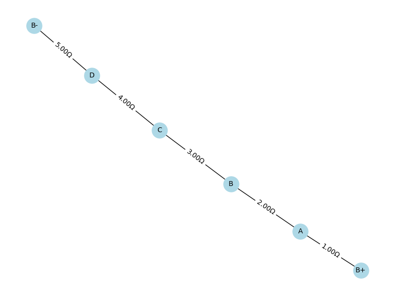
Step 1:
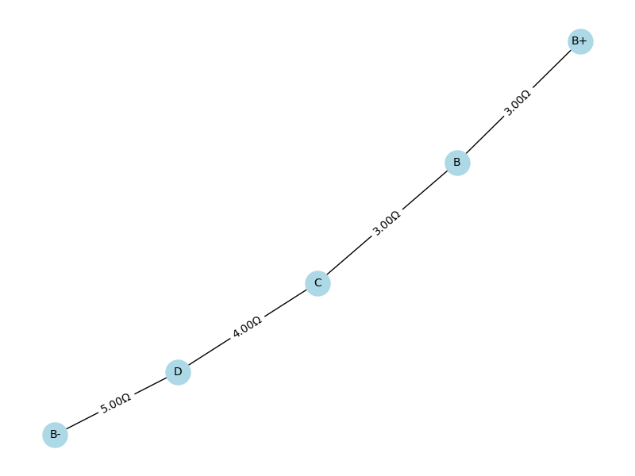
Step 2:
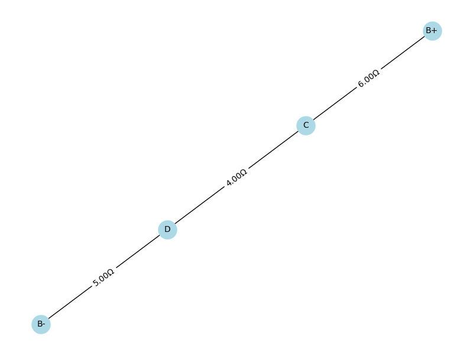
Step 3:
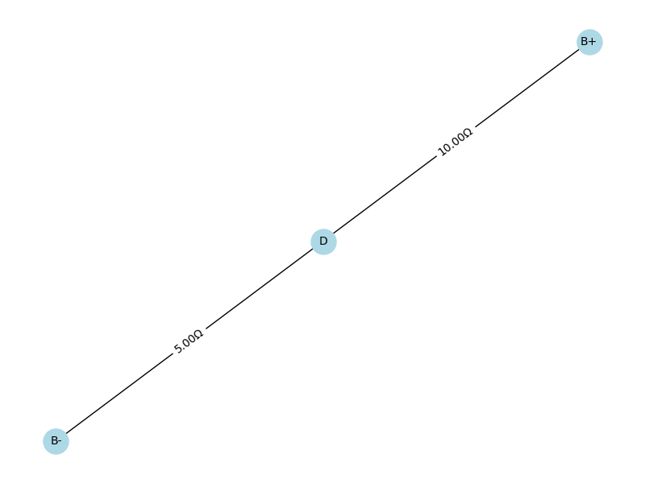
Step 4(final):
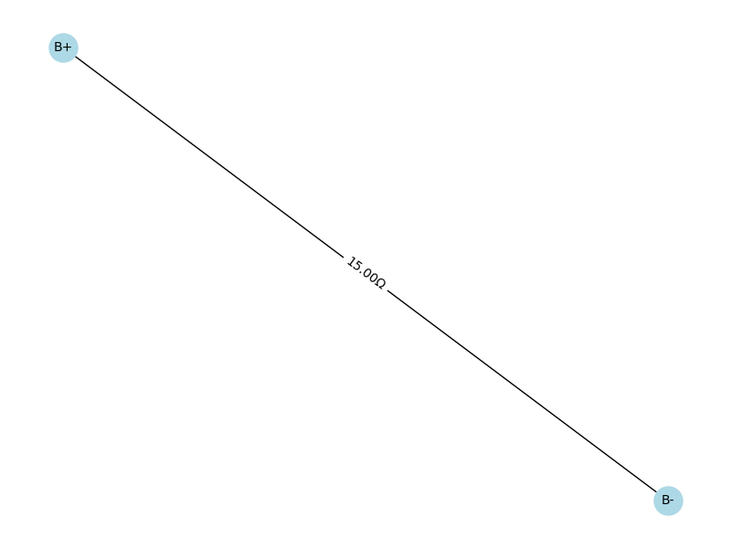
Series Simplification Steps (Only Series Reduction)
Step 1: B+ \(\rightarrow\) A \(\rightarrow\) B
- Resistors: \(1\,\Omega + 2\,\Omega = 3\,\Omega\)
- New edge: B+ - \(3\,\Omega\) - B
Step 2: C \(\rightarrow\) B \(\rightarrow\) B+
- Resistors: \(4\,\Omega + 2\,\Omega = 6\,\Omega\)
- New edge: C - \(6\,\Omega\) - B+
Step 3: D \(\rightarrow\) C \(\rightarrow\) B+
- Resistors: \(4\,\Omega + 6\,\Omega = 10\,\Omega\)
- New edge: D - \(10\,\Omega\) - B+
Step 4: B- \(\rightarrow\) D \(\rightarrow\) B+
- Resistors: \(5\,\Omega + 10\,\Omega = 15\,\Omega\)
- New edge: B- - \(15\,\Omega\) - B+
Final Equivalent Resistance
- \(R_{eq} = 15\,\Omega\) between B+ and B-

Series-Parallel combination circuit:
Initial circuit:
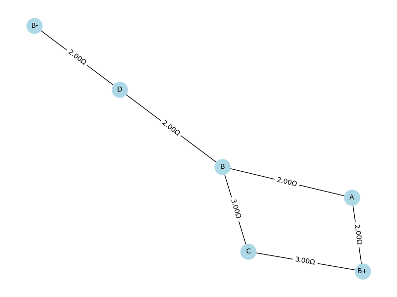
Step 1:
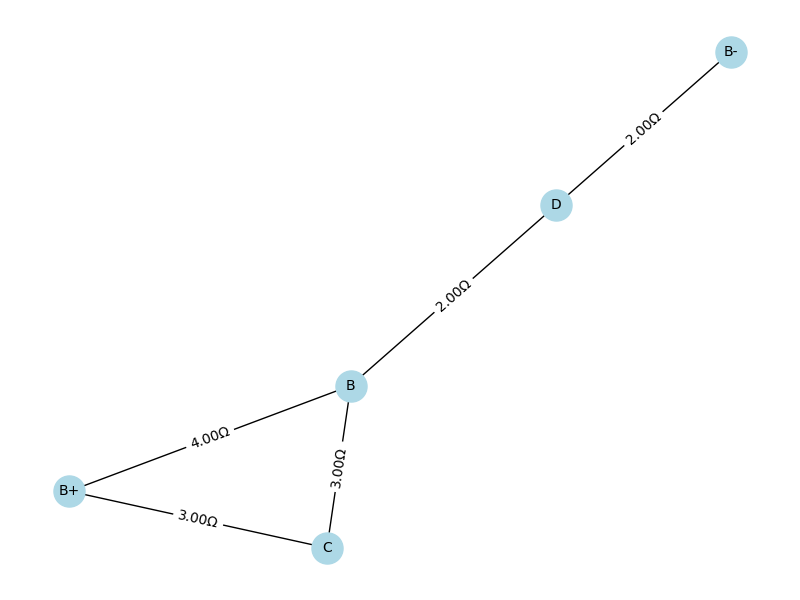
Step 2:
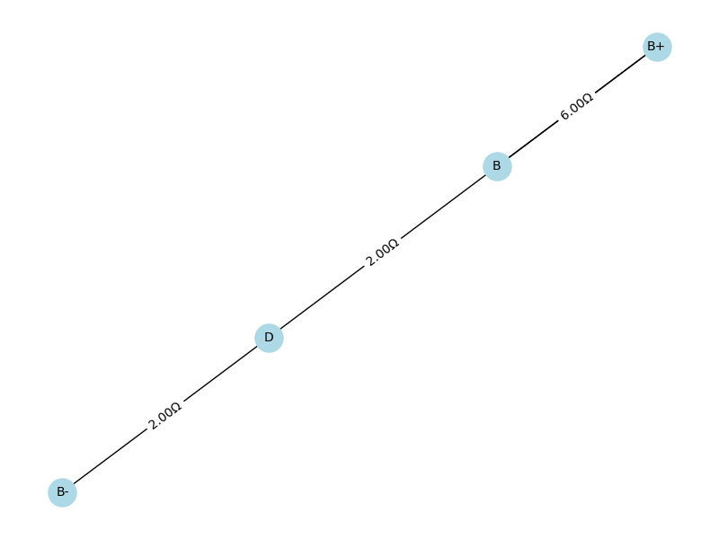
Step 3:
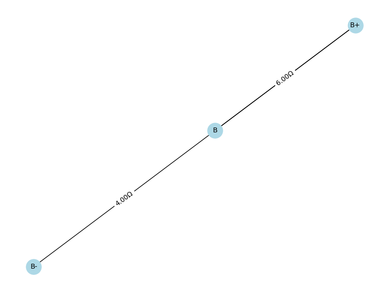
Step 4:
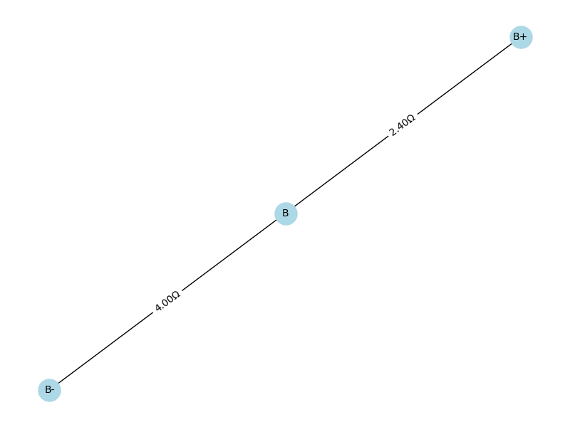
Step 5(final):
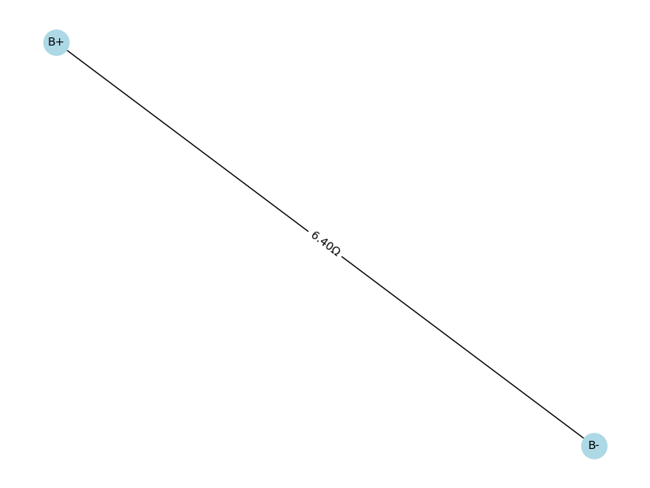
Resistor Simplification Steps Explanation
Step 1: Series
- Path: B+ \(\rightarrow\) A \(\rightarrow\) B
- Resistors: 2 \(\Omega\) + 2 \(\Omega\) = 4 \(\Omega\)
- Result: B+ -- 4 \(\Omega\) -- B
Step 2: Series
- Path: B+ \(\rightarrow\) C \(\rightarrow\) B
- Resistors: 3 \(\Omega\) + 3 \(\Omega\) = 6 \(\Omega\)
- Result: B+ -- 6 \(\Omega\) -- B
Step 3: Series
- Path: B \(\rightarrow\) D \(\rightarrow\) B-
- Resistors: 2 \(\Omega\) + 2 \(\Omega\) = 4 \(\Omega\)
- Result: B -- 4 \(\Omega\) -- B-
Step 4: Parallel
- Between B+ and B: 4 \(\Omega\) || 6 \(\Omega\)
- Result:
\(\(\frac{1}{R} = \frac{1}{4} + \frac{1}{6} = \frac{5}{12} \Rightarrow R = \frac{12}{5} = 2.4\,\Omega\)\)
Step 5: Series
- Path: B+ \(\rightarrow\) B \(\rightarrow\) B-
- Resistors: 2.4 \(\Omega\) + 4 \(\Omega\) = 6.4 \(\Omega\)
- Result: B+ -- 6.4 \(\Omega\) -- B-
Final Equivalent Resistance:
\(R_{eq} = 6.4\,\Omega\)
.gif)